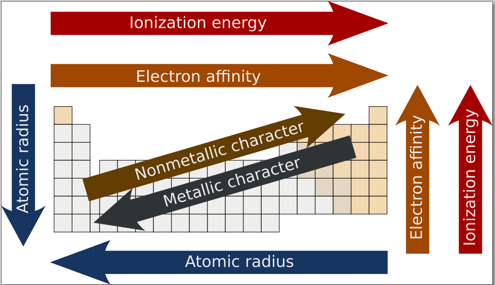

Classification of Elements and Periodicity in Properties
Exam map for this topic
Most PYQs fall into a few buckets: atomic radius, ionic radius,
ionisation enthalpy, electron gain enthalpy, metallic/non-metallic
character, oxide acidity/basicity, and periodic-table position.
Before solving, first identify the bucket: trend order /
isoelectronic comparison / exception / block-group-period / large
I.E. jump.
Many questions are pure recall of one strong exception plus one
standard trend.
Atomic radius: fastest rules
Across a period, atomic radius generally decreases because
effective nuclear charge increases.
Down a group, atomic radius generally increases because new shells
are added.
Largest left-side drop in the same period is usually near the
beginning, like Li to Be.
Lanthanoid contraction makes some \(4d\) and \(5d\) pairs nearly
equal in size: \(Zr \approx Hf,\ Mo \approx W\).
If a radius order conflicts with both “across decreases” and “down
increases,” reject it quickly.
Ionic radius and isoelectronic shortcuts
For isoelectronic species, radius decreases as nuclear charge
increases.
Quick rule: same electrons, more protons \(\Rightarrow\) smaller
ion.
Among \(O^{2-},F^-,Na^+,Mg^{2+},Al^{3+}\), first count electrons,
then sort by nuclear charge.
Anions are usually larger than parent atoms; cations are usually
smaller than parent atoms.
Extra shell beats isoelectronic pull: \(K^+\) stays larger than
the 10-electron ions.
First ionisation enthalpy: trend plus classic exceptions
General trend across a period: \(IE_1\) increases.
Exception 1: \(Be > B\) and \(Mg > Al\) because filled \(s^2\)
subshell is more stable.
Exception 2: \(N > O\) because half-filled \(p^3\) is more stable.
If asked for a missing period-3 value, place Al below Mg but above
Na.
“Higher than both neighbours” in period 2 directly points to Be
and N.
Second and successive ionisation enthalpy
For \(IE_2\), do not study neutral atoms first — study the singly
charged cations.
Stable cation before electron removal \(\Rightarrow\) very high
next ionisation enthalpy.
Large jump after the \(n^{\text{th}}\) ionisation means the atom
had \(n\) valence electrons.
Huge jump after third I.E. \(\Rightarrow\) group 13 pattern.
Electron gain enthalpy: direct rules and must-know
exceptions
More negative value means stronger tendency to accept an electron.
Across a period, EGE generally becomes more negative; down a group
it generally becomes less negative.
Key exception: \(Cl\) has more negative EGE than \(F\).
Key exception: \(S\) has more negative EGE than \(P\).
Oxygen is less negative than sulphur because incoming electron
enters compact \(2p\) orbital with more repulsion.
Noble gases show positive electron gain enthalpy because an extra
electron must enter the next shell.
Metallic character and oxide nature
Across a period, metallic character decreases; down a group, it
increases.
More metallic means easier electron loss and usually lower
ionisation enthalpy.
Oxides across a period move from basic \(\rightarrow\) amphoteric
\(\rightarrow\) acidic.
As the number of known elements increased, a systematic
arrangement became necessary to relate properties, predict trends,
and study reactivity efficiently.
Modern periodic law states that the physical and chemical
properties of elements are periodic functions of their atomic
numbers.
The modern periodic table arranges elements in increasing atomic
number and groups elements with similar valence-shell patterns
together.
Periods correspond broadly to principal shells being filled, while
groups collect similar outer electronic configurations.
Electronic configuration and the periodic table
The position of an element is strongly tied to its electronic
configuration.
Period number is usually the highest principal quantum number
\(n\) present in the valence shell.
Block is identified from the differentiating electron:
\(s\)-block: last electron enters \(s\)-subshell
\(p\)-block: last electron enters \(p\)-subshell
\(d\)-block: last electron enters \((n-1)d\)-subshell
\(f\)-block: last electron enters \((n-2)f\)-subshell
For many \(p\)-block elements, group number equals \(10 + (ns +
np)\) valence electrons.
For many transition elements, group number is obtained from
\((n-1)d + ns\) electrons.
Types of elements: \(s\), \(p\), \(d\), and \(f\) blocks
\(s\)-block elements are generally highly electropositive and
include alkali and alkaline earth metals.
\(p\)-block contains metals, metalloids, and non-metals, so it
shows the widest variety of properties.
\(d\)-block elements are transition elements with characteristic
variable oxidation states and complex formation tendencies.
\(f\)-block elements include lanthanoids and actinoids, often
written separately for table compactness.
Many direct EAPCET questions simply test block recognition from
configuration or family names.
Atomic radius
Atomic radius generally decreases across a period because
effective nuclear charge increases while electrons enter the same
shell.
Atomic radius generally increases down a group because a new shell
is added each step.
Across a period, shielding does not rise enough to cancel
increased nuclear pull.
Down a group, the shell effect dominates and size increases.
Lanthanoid contraction reduces the expected size increase among
later elements, causing pairs like \(Zr/Hf\) to become very
similar.

Ionic radius
Cations are smaller than their parent atoms because electron loss
reduces repulsion and may remove an outer shell.
Anions are larger than their parent atoms because electron gain
increases repulsion in the valence shell.
For isoelectronic species, ionic radius decreases as nuclear
charge increases.